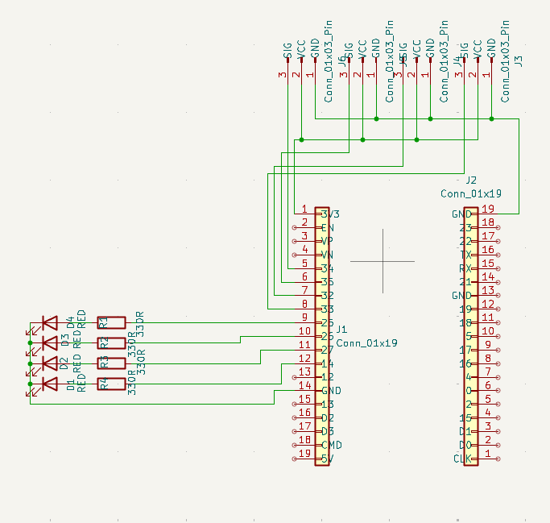
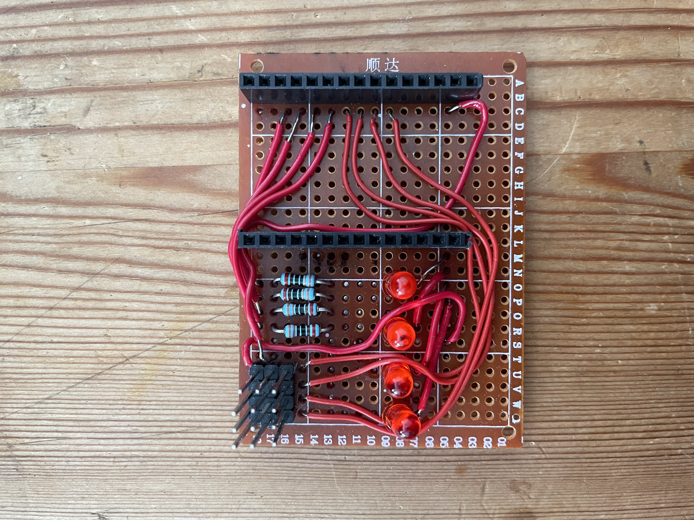
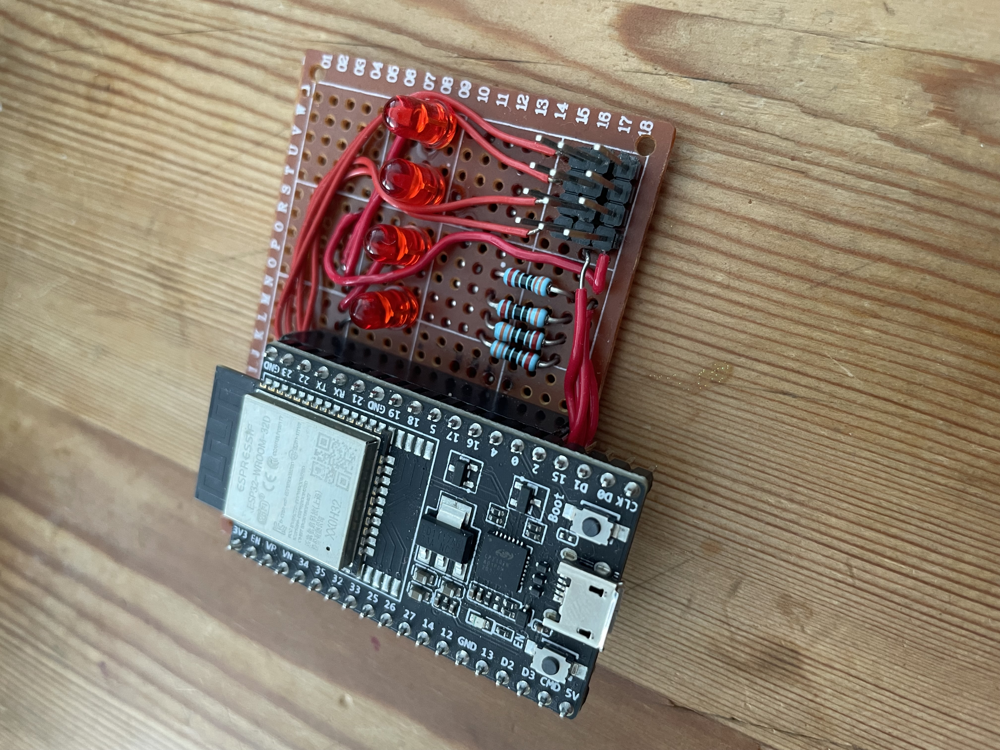
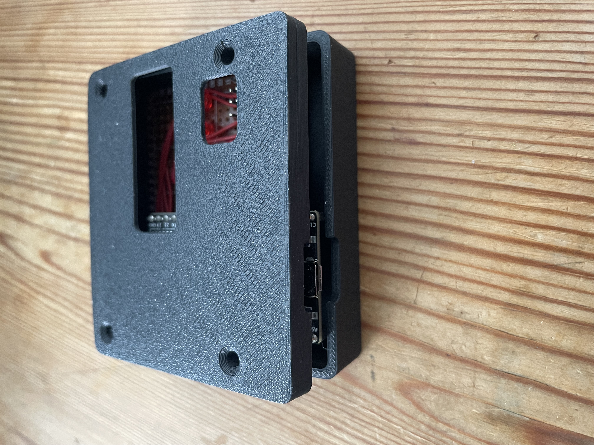
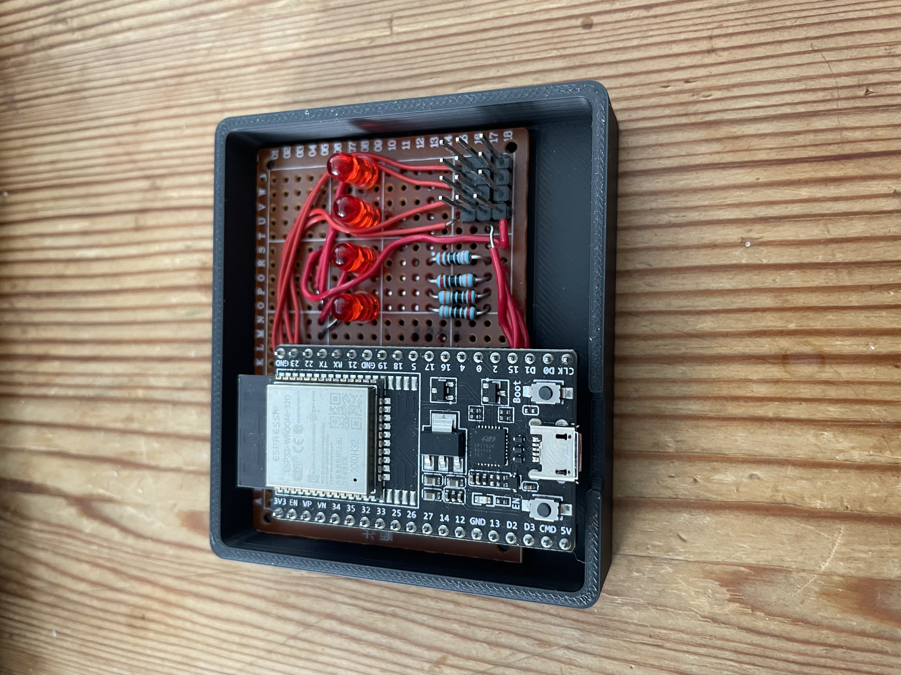
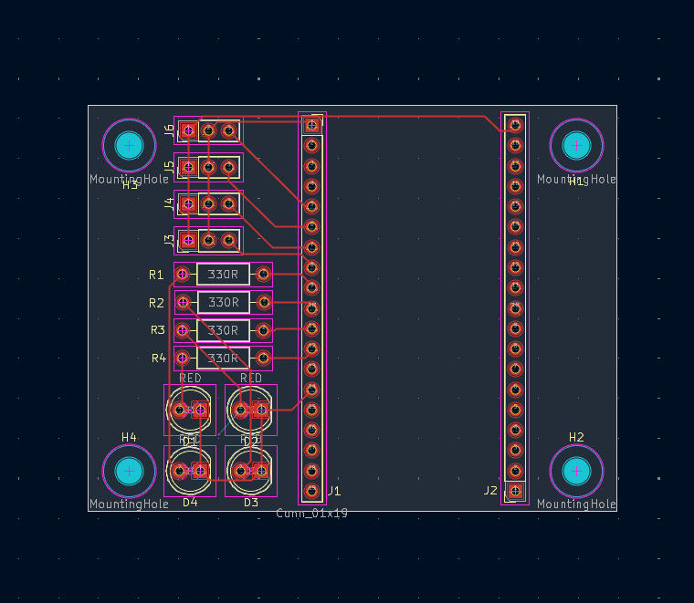
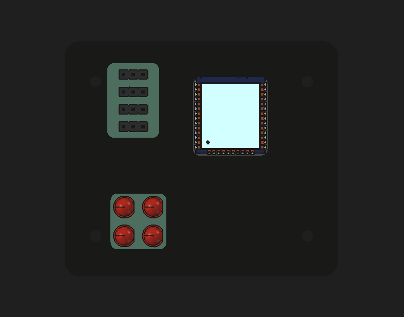
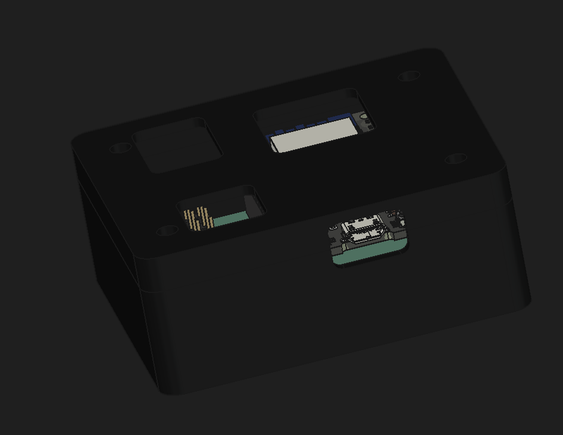
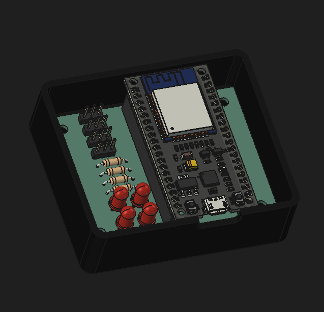

My goal with this project was to create a web server on an ESP32 where I can remotely see the soil moisture of my plants at home. As a bonus, I learned useful skills like CAD and PCB design. I started by learning KiCad and designing a schematic for what I wanted to build.

Afterwards, I decided to solder the components onto a prototype board to check that the schematic was correct.


Thankfully it worked, so I designed a case for it in KiCad. I 3D-printed the case on the school's printers, but sadly the measurements were inaccurate, and I learned that my skills with a caliper were not as good as I thought.


I decided instead to order a PCB from JLCPCB, which would make designing the case easier since the measurements would be known.



